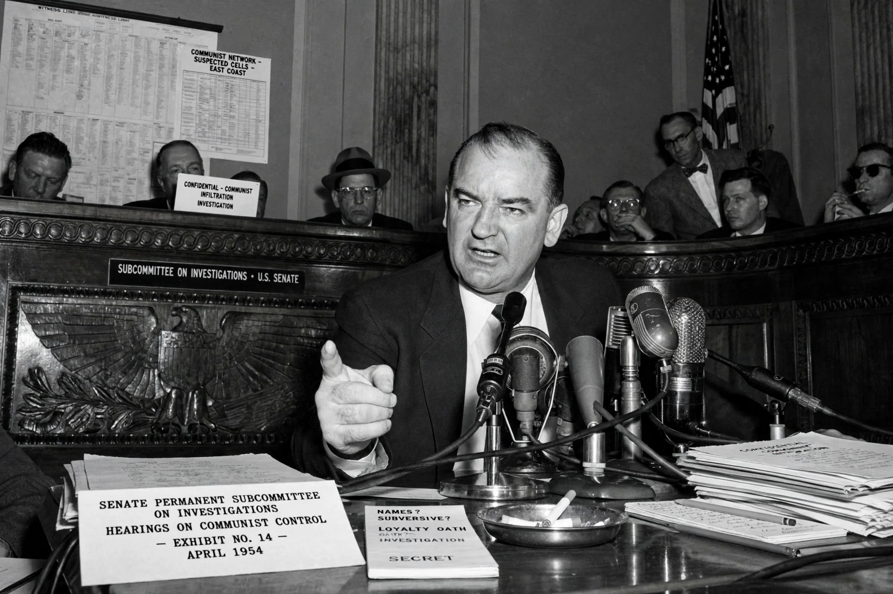

McCarthyism is the practice of making unfounded accusations of disloyalty, subversion, or treason, especially in relation to communism, without proper regard for evidence. It is named after U.S. Senator Joseph McCarthy and characterised the Second Red Scare (late 1940s–1950s).

| McCarthyism | |
|---|---|
| Period | c. 1947–1957 |
| Key figure | Joseph McCarthy |
| Context | Cold War, Second Red Scare |
Fear of Soviet espionage and the Korean War fuelled investigations by the House Un-American Activities Committee, blacklists in Hollywood and government, and loyalty oaths. McCarthy's 1950 Wheeling speech claimed Communists had infiltrated the State Department.
The televised Army–McCarthy hearings (1954) and Edward R. Murrow's See It Now report exposed his methods. The Senate censured McCarthy in December 1954.